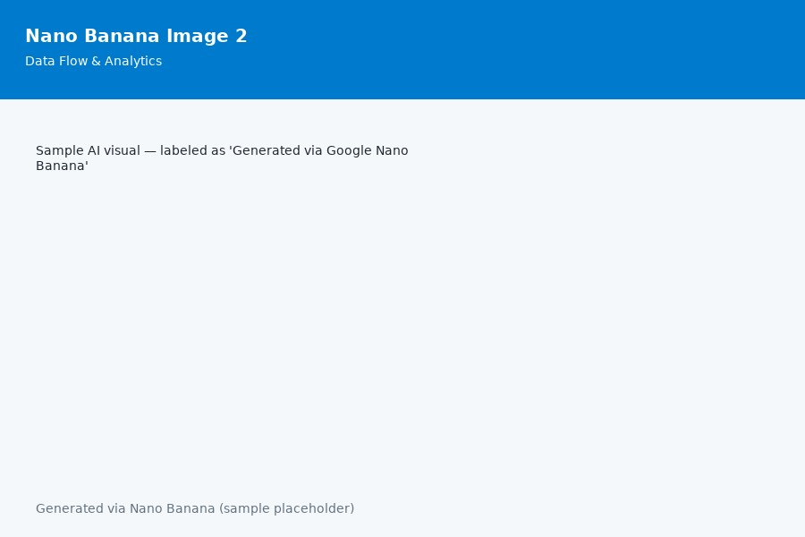

AI & MIS Projects
AI Chatbot Prototype
This project uses ChatGPT prompts to simulate an AI-powered customer support agent that responds to business inquiries efficiently and accurately.

Dashboard Automation
Created a concept dashboard that visualizes company KPIs using AI-generated designs inspired by Google Nano Banana outputs.
